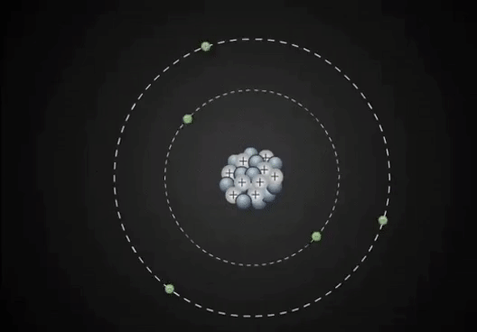
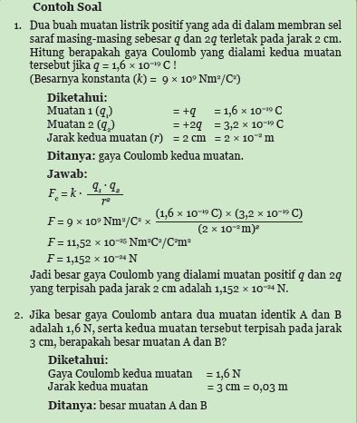
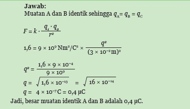
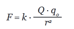
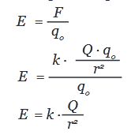
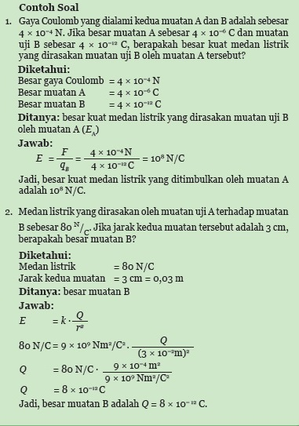
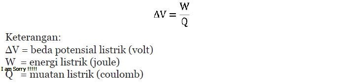

1. Muatan Listrik
Atom tetsusun atas partikel subatom yaitu proton (bermuatan positif), (tidak bermuatan, dan elektron (bermuatan negatif). Neuton dan proton membentuk inti atom, sedangkan elektron bergerak disekitar inti atom. elektron inilah yang memiliki kaitan erat dengan fenomena kelistrikan pada suatu benda. elektron adalah partikel penyusun atom yang bermuatan negatif yang mengelilingi inti atom. Benda yang kelebihan elektron disebut benda bermuatan negatif, sedangkan benda yang kekurangan elektron disebut benda bermuatan positif. Jika benda bermuatan positif didekatkan dengan benda bermuatan negatif, akan tarik menarik. Sebaliknya, jika benda bermuatan positif didekatkan dengan benda bermuatan positif, atau benda bermuatan negatif didekatkan dengan benda bermuatan negatif, akan tolak menolak. Interaksi kedua muatan tersebut merupakan gejala listrik statis. Pada umumnya jumlah elektron dan proton pada atom sebuah benda adalah sama, sehingga atom-atom pada benda tersebut tidak bermuatan atau netral. Salah satu cara untuk mengubah benda menjadi bermuatan adalah dengan menggosokkan benda. Sisir atau penggaris plastik yang digosokkan pada rambut kering akan bermuatan negatif karena sisir atau penggaris plastik mengalami kelebihan elektron (elektron dari rambut berpindah ke sisir atau penggaris plastik). Sementara itu, kaca yang digosokkan pada rambut kering akan bermuatan positif karena kaca mengalami kekurangan elektron (elektron dari kaca berpindah ke rambut yang kering).

Sumber: https://gfycat.com/charmingsnoopyerin
2. Hukum Coulumb
Ilmuwan Prancis, Charles Augustin Coulomb (1736-1806), menyelidiki hubungan
gaya tolak-menolak atau gaya tarik-menarik dua benda bermuatan listrik terhadap besar
muatan listrik dan jaraknya menggunakan alat neraca puntir Coulomb menyimpulkan interaksi
dua benda yang bermuatan sebagai berikut.
a. Semakin besar jarak kedua benda yang bermuatan, semakin kecil gaya listrik antara benda tersebut dan sebaliknya.
b. Semakin besar muatan kedua benda, semakin besar gaya listrik antara benda tersebut.
Sumber: Sumber. Dok. Kemendikbud
Gambar: Gaya coulum pada muatan listrik



3. Medan Listrik
Di sekitar muatan-muatan listrik ada medan listrik, yang dapat memengaruhi muatan lain yang berada tidak jauh darinya. Medan listrik merupakan daerah di sekitar muatan yang dapat menimbulkan gaya listrik terhadap muatan lain.Medan listrik dapat digambarkan oleh serangkaian garis gaya listrik yang arahnya ke luar atau ke dalam muatan. Arah garis gaya listrik kedalam digunakan untuk menunjukkan muatan negatif dan arah garismedan listrik ke luar digunakan untuk menunjukkan muatan positif.

Sumber: Sumber. Dok. Kemendikbud
Gambar: Garis medan listrik dua muatan

Sumber:Dok. Kemendikbud
Gambar: Garis medan listrik dua muatan
Sumber:Dok. Kemendikbud
Gambar: Muatan Q didekati muatan q



4. Beda Potensial dan Energi Listrik
Orang yang pertama kali menyatakan bahwa petir terjadi akibat adanya gejala listrik statis adalah Benjamin Franklin (1706-1790). Menurutnya, petir adalah kilatan cahaya yang muncul akibat perpindahan muatan negatif (elektron) antara awan dan awan atau antara awan dan bumi. Petir dapat terjadi karena adanya beda potensial yang sangat besar antara dua awan yang berbeda atau antara awan dengan bumi. Akibatnya akan terjadi lompatan muatan listrik atau perpindahan elektron secara besar-besaran dari awan ke awan atau dari awan ke bumi.

Sumber: (a) freedigitalpothos.net (b) hdw.datawallpaper.com
Gambar : (a) Benjamin Franklin , (b) Sambaran Petir pada Malam Hari
Besarnya beda potensial listrik dapat dihitung dengan membandingkan besar energi listrik yang diperlukan dengan jumlah muatan listrik yang dipindahkan, yaitu: